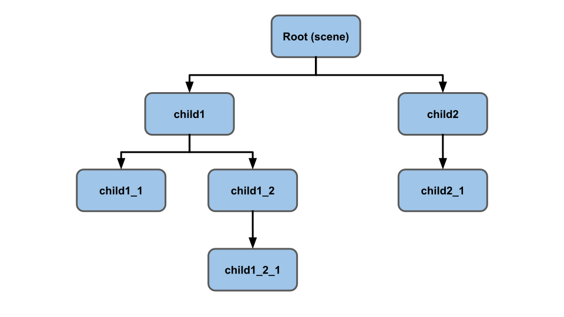
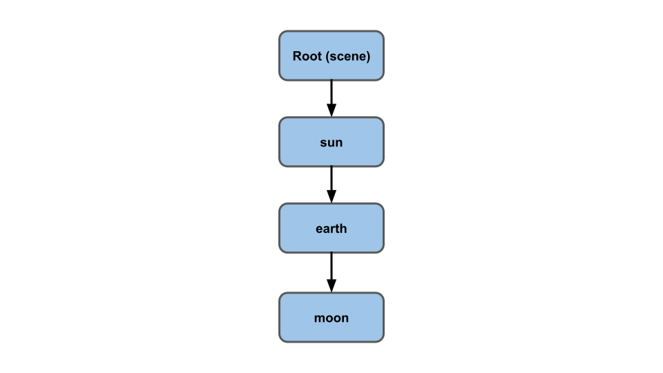
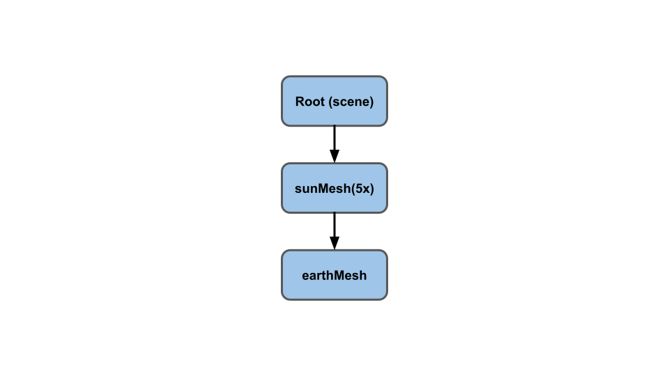
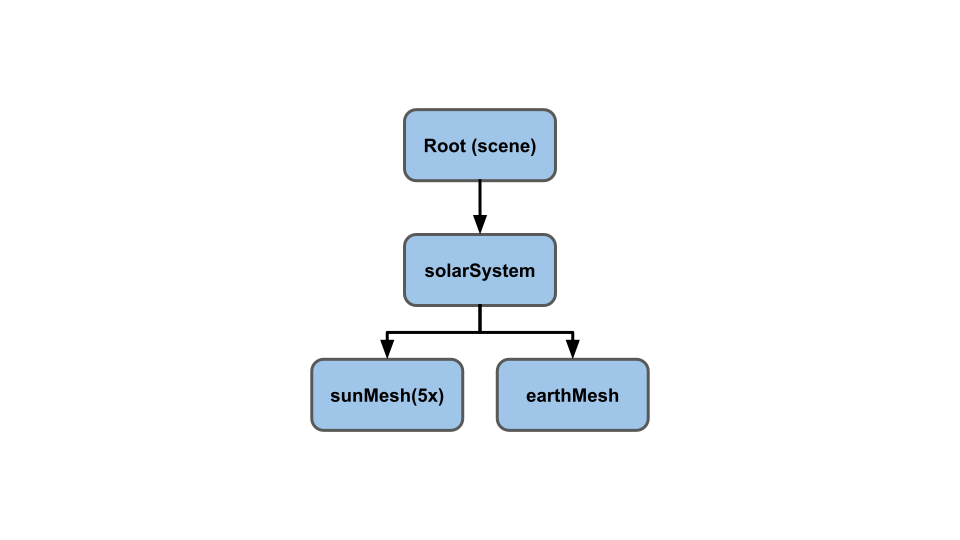
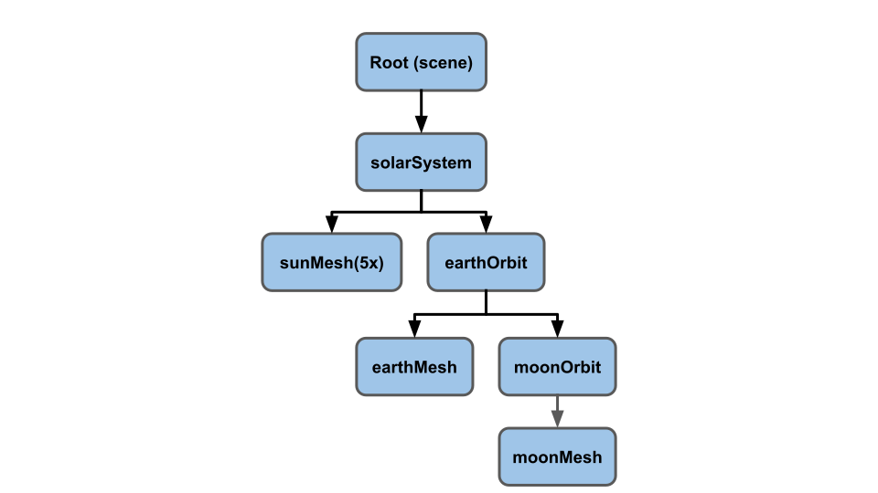

Graphe de de scène
Cet article fait partie d'une série consacrée à Three.js. Le premier article s'intitule Principes de base. Si vous ne l'avez pas encore lu, vous voudriez peut-être commencer par là.
Le cœur de Three.js est sans aucun doute son graphe de scène. Un graphe de scène est une représentation arborescente des objets que l’on souhaite afficher, où chaque nœud représente un espace local.

C'est un peu abstrait, alors essayons de donner quelques exemples.
On pourrait prendre comme exemple le système solaire, le Soleil, la Terre et la Lune.

La Terre tourne autour du Soleil. La Lune tourne autour de la Terre. La Lune se déplace en cercle autour de la Terre. Du point de vue de la Lune, elle tourne dans "l'espace local" de la Terre. Même si son mouvement par rapport au Soleil est une courbe folle comme un spirographe du point de vue de la Lune, il n'a qu'à se préoccuper de tourner autour de l'espace local de la Terre.
Pour le voir autrement, vous qui vivez sur Terre, n'avez pas à penser à la rotation de la Terre sur son axe ni à sa rotation autour du Soleil. Vous marchez ou conduisez ou nagez ou courez comme si la Terre ne bougeait pas ou ne tournait pas du tout. Vous marchez, conduisez, nagez, courez et vivez dans "l'espace local" de la Terre, même si par rapport au Soleil, vous tournez autour de la Terre à environ 1 600 km/h et autour du Soleil à environ 107000 km/h. Votre position dans le système solaire est similaire à celle de la Lune au-dessus, mais vous n'avez pas à vous en préoccuper. Vous vous souciez de votre position par rapport à la Terre dans son "espace local".
Mais allons-y une étape à la fois! Imaginez que nous voulions faire un diagramme du Soleil, de la Terre et de la Lune. Nous allons commencer par le Soleil en créant une simpme sphère et en la mettant à l'origine. Remarque : Nous utilisons le Soleil, la Terre et la Lune comme démonstration de l'utilisation d'une scène. Bien sûr, le vrai Soleil, la Terre et la Lune utilisent la physique, mais pour nos besoins, nous allons faire semblant.
// un tableau d'objets dont la rotation à mettre à jour
const objects = [];
// utiliser une seule sphère pour tout
const radius = 1;
const widthSegments = 6;
const heightSegments = 6;
const sphereGeometry = new THREE.SphereGeometry(
radius, widthSegments, heightSegments);
const sunMaterial = new THREE.MeshPhongMaterial({emissive: 0xFFFF00});
const sunMesh = new THREE.Mesh(sphereGeometry, sunMaterial);
sunMesh.scale.set(5, 5, 5); // agrandir le Soleil
scene.add(sunMesh);
objects.push(sunMesh);
Nous utilisons une sphère ayant un faible nombre de polygones (avec seulement 6 segments autour de son équateur) afin de faciliter la visualisation de sa rotation.
Nous allons réutiliser la même sphère pour les autres astres : nous allons grossir la sunMesh 5 fois.
Nous avons également défini la propriété emissive du matériau Phong sur jaune. La propriété émissive d'un matériau Phong est essentiellement la couleur qui sera dessinée sans que la lumière ne frappe la surface. La lumière est ajoutée à cette couleur.
Mettons aussi une 'point light' au centre de la scène. Nous entrerons dans les détails plus tard, mais pour l'instant, la version simple est une lumière qui émane d'un seul point.
{
const color = 0xFFFFFF;
const intensity = 3;
const light = new THREE.PointLight(color, intensity);
scene.add(light);
}
Pour faciliter la visualisation, nous allons placer la caméra directement au-dessus de l'origine en regardant vers le bas. Le moyen le plus simple de le faire est d'utiliser la fonction lookAt. Cette fonction oriente la caméra pour "regarder" vers la position que nous passons à lookAt. Avant de faire cela, nous devons cependant indiquer à la caméra dans quelle direction "vers son haut" est orienté. Pour la plupart des situations, un Y positif est suffisant, mais puisque nous regardons vers le bas, nous devons dire à la caméra que Z positif est levé.
const camera = new THREE.PerspectiveCamera(fov, aspect, near, far); camera.position.set(0, 50, 0); camera.up.set(0, 0, 1); camera.lookAt(0, 0, 0);
Dans la boucle de rendu, issue des exemples précédents, nous faisons pivoter tous les objets de notre tableau objects avec ce code.
objects.forEach((obj) => {
obj.rotation.y = time;
});
Ajouter la sunMesh au tableau objects, la fait pivoter.
Ajoutons maintenant la Terre.
const earthMaterial = new THREE.MeshPhongMaterial({color: 0x2233FF, emissive: 0x112244});
const earthMesh = new THREE.Mesh(sphereGeometry, earthMaterial);
earthMesh.position.x = 10;
scene.add(earthMesh);
objects.push(earthMesh);
Nous fabriquons un matériau bleu, mais nous lui donnons une petite quantité de bleu émissif pour qu'il apparaisse sur notre fond noir.
Nous utilisons la même sphereGeometry avec notre nouveau EarthMaterial bleu pour faire une earthMesh.
Nous positionnons ces 10 unités à gauche du Soleil et l'ajoutons à la scène. L'ajouter à notre tableau objects, la met en mouvement également.
Vous pouvez voir que le Soleil et la Terre tournent, mais que la Terre ne tourne pas autour du Soleil. Faisons de la Terre un enfant du Soleil
-scene.add(earthMesh); +sunMesh.add(earthMesh);
et...
Que s'est-il passé ? Pourquoi la Terre a-t-elle la même taille que le Soleil et pourquoi est-elle si loin ? En fait, j'ai dû déplacer la caméra de 50 à 150 unités au-dessus pour voir la Terre.
Nous avons fait de earthMesh un enfant du sunMesh.
La sunMesh a son échelle définie sur 5x grâce à sunMesh.scale.set(5, 5, 5). Cela signifie que l'espace local sunMeshs est 5 fois plus grand.
Tout ce qui est mis dans cet espace sera multiplié par 5. Cela signifie que la Terre est maintenant 5 fois plus grande et sa distance par rapport au Soleil (earthMesh.position.x = 10) est également 5 fois plus grande.
Notre scène ressemble maintenant à cela

Pour résoudre ce problème, ajoutons un nœud vide. Nous lions le Soleil et la Terre à ce nœud.
+const solarSystem = new THREE.Object3D();
+scene.add(solarSystem);
+objects.push(solarSystem);
const sunMaterial = new THREE.MeshPhongMaterial({emissive: 0xFFFF00});
const sunMesh = new THREE.Mesh(sphereGeometry, sunMaterial);
sunMesh.scale.set(5, 5, 5);
-scene.add(sunMesh);
+solarSystem.add(sunMesh);
objects.push(sunMesh);
const earthMaterial = new THREE.MeshPhongMaterial({color: 0x2233FF, emissive: 0x112244});
const earthMesh = new THREE.Mesh(sphereGeometry, earthMaterial);
earthMesh.position.x = 10;
-sunMesh.add(earthMesh);
+solarSystem.add(earthMesh);
objects.push(earthMesh);
Ici, nous avons fait un Object3D. Comme une Mesh, c'est aussi un nœud, mais contrairement à une Mesh, il n'a ni matériau ni géométrie. Il ne représente qu'un espace local.
Notre nouvelle scène ressemble à ceci :

La sunMesh et la earthMesh sont tous les deux des enfants de solarSystem. Les trois sont en train de tourner, et comme earthMesh n'est pas un enfant de sunMesh, elle n'est plus mise à l'échelle.
Encore mieux. La Terre est plus petite que le Soleil, elle tourne autour de lui et sur elle-même.
Sur le même schéma, ajoutons une Lune.
+const earthOrbit = new THREE.Object3D();
+earthOrbit.position.x = 10;
+solarSystem.add(earthOrbit);
+objects.push(earthOrbit);
const earthMaterial = new THREE.MeshPhongMaterial({color: 0x2233FF, emissive: 0x112244});
const earthMesh = new THREE.Mesh(sphereGeometry, earthMaterial);
-earthMesh.position.x = 10; // note that this offset is already set in its parent's THREE.Object3D object "earthOrbit"
-solarSystem.add(earthMesh);
+earthOrbit.add(earthMesh);
objects.push(earthMesh);
+const moonOrbit = new THREE.Object3D();
+moonOrbit.position.x = 2;
+earthOrbit.add(moonOrbit);
+const moonMaterial = new THREE.MeshPhongMaterial({color: 0x888888, emissive: 0x222222});
+const moonMesh = new THREE.Mesh(sphereGeometry, moonMaterial);
+moonMesh.scale.set(.5, .5, .5);
+moonOrbit.add(moonMesh);
+objects.push(moonMesh);
Ajoutons à nouveau d'autres nœuds à notre scène. D'abord, un Object3D appelé earthOrbit
ensuite ajoutons-lui un earthMesh et un moonOrbit. Finalement, ajoutons un moonMesh
au moonOrbit. Notre scène devrait ressembler à ceci :

et à ça :
Vous pouvez voir que la Lune suit le modèle de spirographe indiqué en haut de cet article, mais nous n'avons pas eu à le calculer manuellement. Nous venons de configurer notre graphe de scène pour le faire pour nous.
Il est souvent utile de dessiner quelque chose pour visualiser les nœuds dans le graphe de scène. Three.js dispose pour cela de Helpers.
L'un d'entre eux s'appelle AxesHelper. Il dessine trois lignes représentant les axes
X,
Y, et
Z. Ajoutons-en un à chacun de nos nœuds.
// add an AxesHelper to each node
objects.forEach((node) => {
const axes = new THREE.AxesHelper();
axes.material.depthTest = false;
axes.renderOrder = 1;
node.add(axes);
});
Dans notre cas, nous voulons que les axes apparaissent même s'ils sont à l'intérieur des sphères.
Pour cela, nous définissons le depthTest de material à false, pour ne pas vérifier s'ils dessinent derrière quelque chose. Nous définissons également leur renderOrder sur 1 (la valeur par défaut est 0) afin qu'ils soient dessinés après toutes les sphères. Sinon, une sphère pourrait les recouvrir et les recouvrir.
Vous pouvez voir les axes x (rouge) et z (bleu). Comme nous regardons vers le bas et que chacun de nos objets tourne autour de son axe y, nous ne voyons pas bien l'axe y (verte).
Il peut être difficile de voir certains d'entre eux, car il y a 2 paires d'axes qui se chevauchent. Le sunMesh et le solarSystem sont tous les deux à la même position. De même, earthMesh et earthOrbit sont à la même position. Ajoutons quelques contrôles simples pour nous permettre de les activer/désactiver pour chaque nœud. Pendant que nous y sommes, ajoutons également un autre assistant appelé GridHelper. Il crée une grille 2D sur le plan X,Z. Par défaut, la grille est de 10x10 unités.
Nous allons également utiliser lil-gui, une librairie d'interface utilisateur très populaire pour les projets Three.js. lil-gui prend un objet et un nom de propriété sur cet objet et, en fonction du type de la propriété, crée automatiquement une interface utilisateur pour manipuler cette propriété.
Nous voulons créer à la fois un GridHelper et un AxesHelper pour chaque nœud. Nous avons besoin d'un label pour chaque nœud, nous allons donc nous débarrasser de l'ancienne boucle et faire appel à une fonction pour ajouter les helpers pour chaque nœud.
-// add an AxesHelper to each node
-objects.forEach((node) => {
- const axes = new THREE.AxesHelper();
- axes.material.depthTest = false;
- axes.renderOrder = 1;
- node.add(axes);
-});
+function makeAxisGrid(node, label, units) {
+ const helper = new AxisGridHelper(node, units);
+ gui.add(helper, 'visible').name(label);
+}
+
+makeAxisGrid(solarSystem, 'solarSystem', 25);
+makeAxisGrid(sunMesh, 'sunMesh');
+makeAxisGrid(earthOrbit, 'earthOrbit');
+makeAxisGrid(earthMesh, 'earthMesh');
+makeAxisGrid(moonOrbit, 'moonOrbit');
+makeAxisGrid(moonMesh, 'moonMesh');
makeAxisGrid crée un AxisGridHelper qui est une classe que nous allons créer pour rendre lil-gui heureux. Comme il est dit ci-dessus, lil-gui créera automatiquement une interface utilisateur qui manipule la propriété nommée d'un objet. Cela créera une interface utilisateur différente selon le type de propriété. Nous voulons qu'il crée une case à cocher, nous devons donc spécifier une propriété bool. Mais, nous voulons que les axes et la grille apparaissent/disparaissent en fonction d'une seule propriété, nous allons en conséquence créer une classe qui a un getter et un setter pour une propriété. De cette façon, nous pouvons laisser lil-gui penser qu'il manipule une seule propriété, mais en interne, nous pouvons définir la propriété visible de AxesHelper et GridHelper pour un nœud.
// Activer/désactiver les axes et la grille lil-gui
// nécessite une propriété qui renvoie un bool
// pour décider de faire une case à cocher
// afin que nous créions un setter et un getter pour `visible`
// que nous pouvons dire à lil-gui de regarder.
class AxisGridHelper {
constructor(node, units = 10) {
const axes = new THREE.AxesHelper();
axes.material.depthTest = false;
axes.renderOrder = 2; // after the grid
node.add(axes);
const grid = new THREE.GridHelper(units, units);
grid.material.depthTest = false;
grid.renderOrder = 1;
node.add(grid);
this.grid = grid;
this.axes = axes;
this.visible = false;
}
get visible() {
return this._visible;
}
set visible(v) {
this._visible = v;
this.grid.visible = v;
this.axes.visible = v;
}
}
Une chose à noter est que nous définissons le renderOrder de l'AxesHelper sur 2 et pour le GridHelper sur 1 afin que les axes soient dessinés après la grille. Sinon, la grille pourrait écraser les axes.
Cliquez sur solarSystem et vous verrez que la Terre est exactement à 10 unités du centre, comme nous l'avons défini ci-dessus. Vous pouvez voir que la Terre est dans l'espace local du solarSystem. De même, si vous cliquez sur earthOrbit, vous verrez que la Lune est exactement à 2 unités du centre de l'espace local de earthOrbit.
Un autre exemple de scène. Une automobile dans un jeu simple pourrait avoir un graphe de scène comme celui-ci

Si vous déplacez la carrosserie de la voiture, toutes les roues bougeront avec elle. Si vous vouliez que le corps rebondisse séparément des roues, vous pouvez lier le corps et les roues à un nœud "cadre" qui représente le cadre de la voiture.
Un autre exemple avec un humain dans un jeu vidéo.

Vous pouvez voir que le graphique de la scène devient assez complexe pour un humain. En fait, le graphe ci-dessus est simplifié. Par exemple, vous pouvez l'étendre pour couvrir chaque doigt (au moins 28 autres nœuds) et chaque orteil (encore 28 nœuds) plus ceux pour le visage et la mâchoire, les yeux et peut-être plus.
Faisons un graphe semi-complexe. On va faire un char. Il aura 6 roues et une tourelle. Il pourra suivre un chemin. Il y aura une sphère qui se déplacera et le char ciblera la sphère.
Créons une scène un peu plus complexe : nous allons créer un char d'assaut (tank) avec ses six roues et sa tourelle. Le tank suivra un chemin prédéfini. Il y aura aussi une sphère qui tourne autour du tank et ce dernier orientera sa tourelle vers cette cible.
Voici le graphique de la scène. Les maillages sont colorés en vert, les Object3D en bleu, les lumières en or et les caméras en violet. Une caméra n'a pas été ajoutée au graphique de la scène.
Regardez dans le code pour voir la configuration de tous ces nœuds.
Pour la cible, la sphère que le char vise, il y a une targetOrbit (Object3D) qui tourne de la même manière que la earthOrbit ci-dessus. Une targetElevation (Object3D) qui est un enfant de targetOrbit fournit un décalage par rapport à targetOrbit et une élévation de base. Un autre Object3D appelé targetBob qui monte et descend par rapport à la targetElevation. Enfin, il y a le targetMesh qui est seulement un cube que nous faisons pivoter et changeons ses couleurs.
// mettre en mouvement la cible targetOrbit.rotation.y = time * .27; targetBob.position.y = Math.sin(time * 2) * 4; targetMesh.rotation.x = time * 7; targetMesh.rotation.y = time * 13; targetMaterial.emissive.setHSL(time * 10 % 1, 1, .25); targetMaterial.color.setHSL(time * 10 % 1, 1, .25);
Pour le char, il y a un Object3D appelé tank qui est utilisé pour déplacer tout ce qui se trouve en dessous. Le code utilise une SplineCurve à laquelle il peut demander des positions le long de cette courbe. 0.0 est le début de la courbe. 1,0 est la fin de la courbe. Il demande la position actuelle où il met le réservoir. Il demande ensuite une position légèrement plus bas dans la courbe et l'utilise pour pointer le réservoir dans cette direction à l'aide de Object3D.lookAt.
const tankPosition = new THREE.Vector2(); const tankTarget = new THREE.Vector2(); ... // Mettre en mouvement le char const tankTime = time * .05; curve.getPointAt(tankTime % 1, tankPosition); curve.getPointAt((tankTime + 0.01) % 1, tankTarget); tank.position.set(tankPosition.x, 0, tankPosition.y); tank.lookAt(tankTarget.x, 0, tankTarget.y);
La tourelle sur le dessus du char est déplacée automatiquement en tant qu'enfant du char. Pour le pointer sur la cible, nous demandons simplement la position de la cible, puis utilisons à nouveau Object3D.lookAt.
const targetPosition = new THREE.Vector3(); ... // Tourelle face à la cible targetMesh.getWorldPosition(targetPosition); turretPivot.lookAt(targetPosition);
Il y a une tourretCamera qui est un enfant de turretMesh donc il se déplacera de haut en bas et tournera avec la tourelle. On la fait viser la cible.
// la turretCamera regarde la cible turretCamera.lookAt(targetPosition);
Il y a aussi un targetCameraPivot qui est un enfant de targetBob donc il flotte
autour de la cible. Nous le pointons vers le char. Son but est de permettre à la
targetCamera d'être décalé par rapport à la cible elle-même. Si nous faisions de la caméra
un enfant de targetBob, elle serait à l'intérieur de la cible.
// faire en sorte que la cibleCameraPivot regarde le char tank.getWorldPosition(targetPosition); targetCameraPivot.lookAt(targetPosition);
Enfin on fait tourner toutes les roues
wheelMeshes.forEach((obj) => {
obj.rotation.x = time * 3;
});
Pour les caméras, nous avons configuré un ensemble de 4 caméras au moment de l'initialisation avec des descriptions.
const cameras = [
{ cam: camera, desc: 'detached camera', },
{ cam: turretCamera, desc: 'on turret looking at target', },
{ cam: targetCamera, desc: 'near target looking at tank', },
{ cam: tankCamera, desc: 'above back of tank', },
];
const infoElem = document.querySelector('#info');
et nous parcourons chaque caméra au moment du rendu
const camera = cameras[time * .25 % cameras.length | 0]; infoElem.textContent = camera.desc;
J'espère que cet article vous aura donné une bonne idée du fonctionnement des graphes de scène et de la façon dont vous devez les utiliser. Créer des nœuds « Object3D » et savoir leur attacher d'autres nœuds est une étape importante dans l'utilisant un moteur 3D tel que Three.js., car bien souvent, on pourrait penser que des mathématiques complexes sont nécessaires pour faire bouger quelque chose et faire pivoter comme vous le souhaitez (comme calculer le mouvement de la Lune, savoir où calculer la position des roues de la voiture par rapport à son corps). En utilisant un graphe de scène, et comme nous l'avons vu dans cet article, le travail en est grandement simplifié.
Article suivant :Passons maintenant en revue les materials.